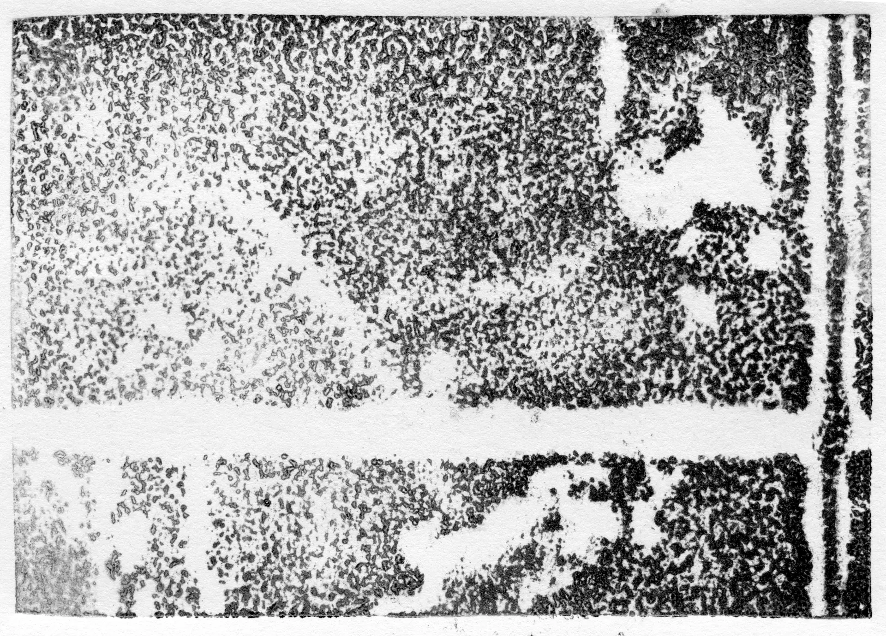
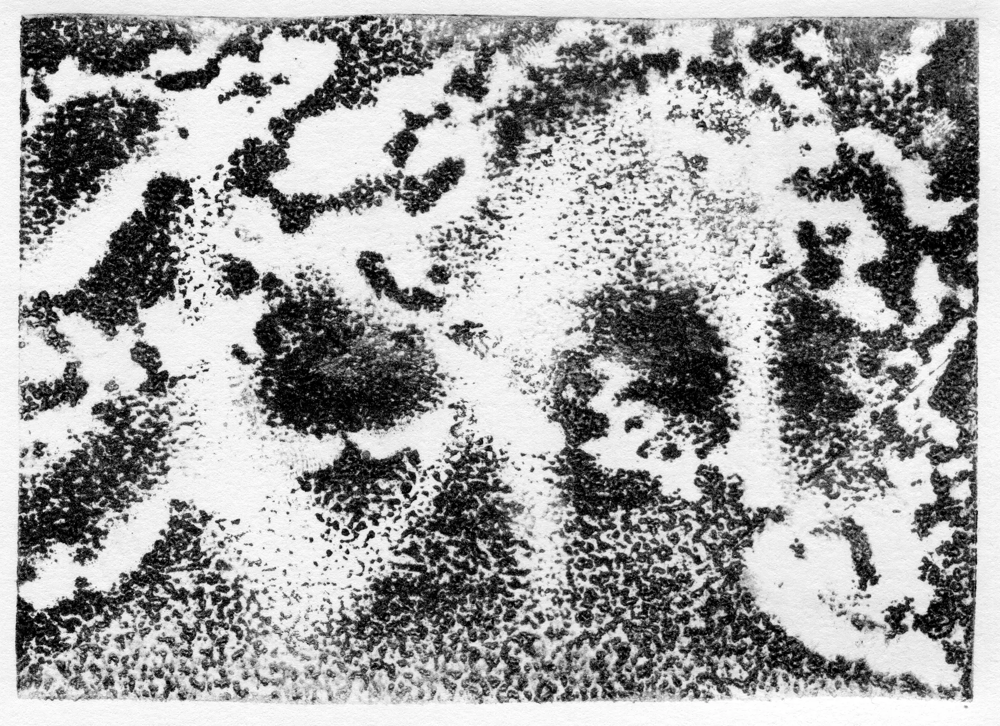
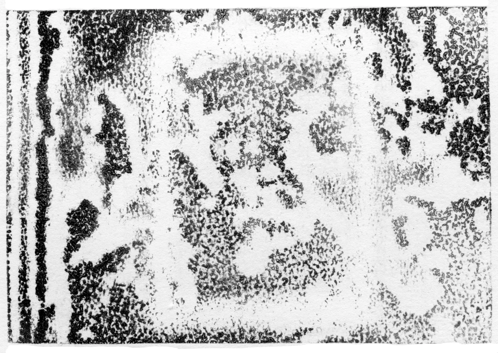
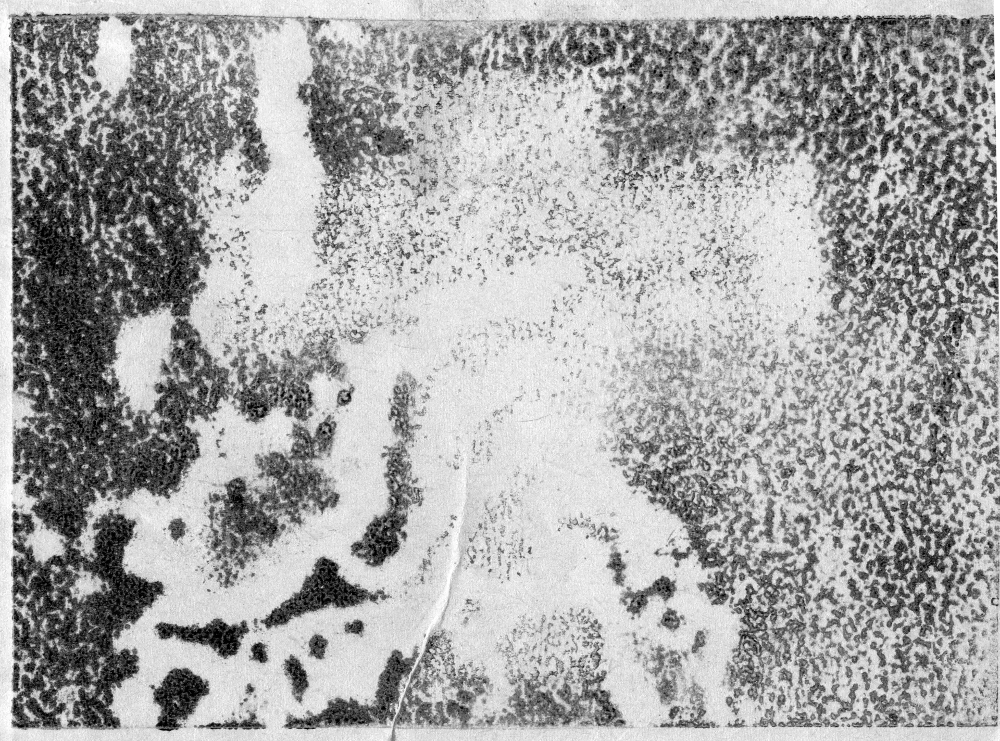
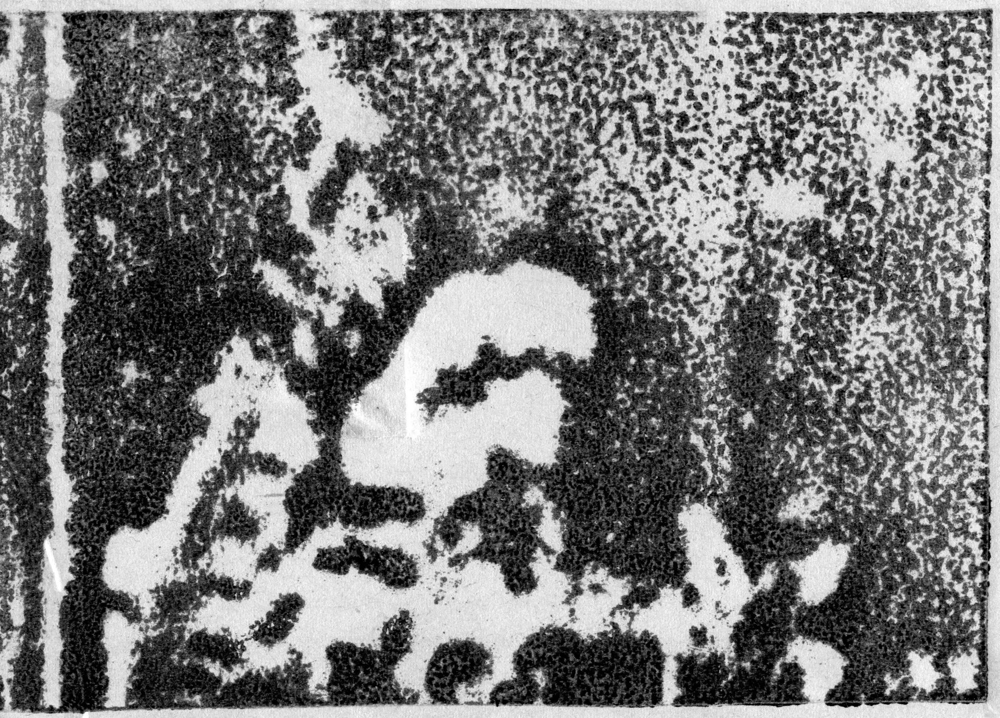
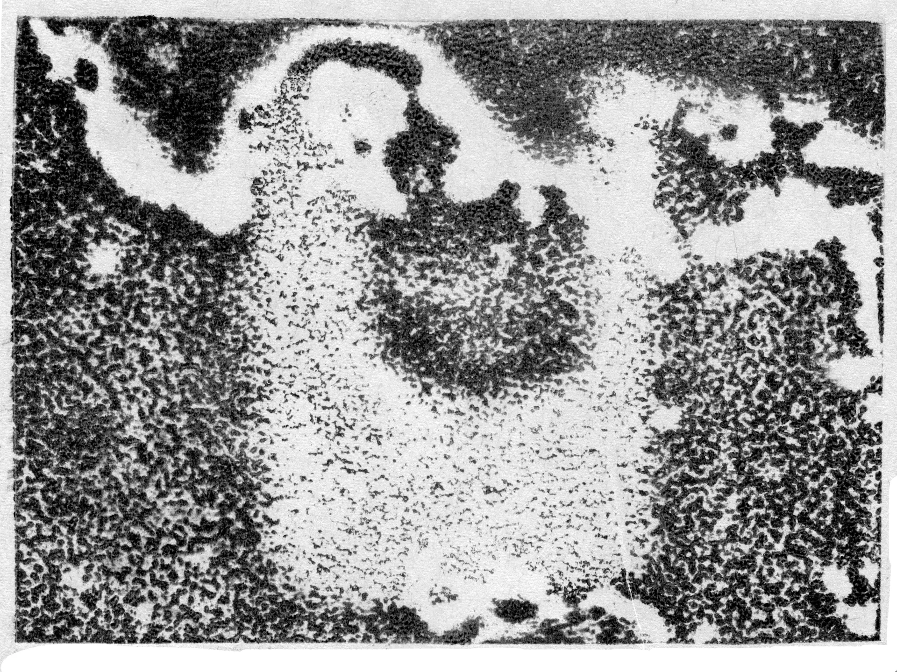
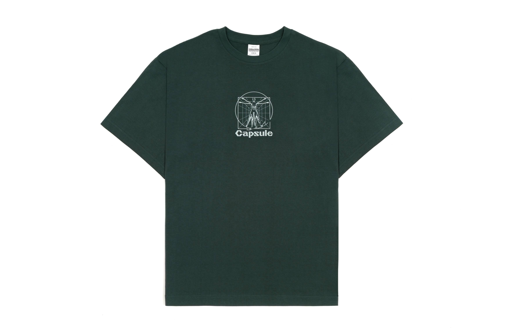

обратная сторона луны
В проекте много нашей рефлексии о процессе, об архивации, работе с архивом и об умении возвращаться к старым работам. Нам кажется, что в Школе проекты часто существуют в вакууме, зацикливаются на самих себя. Нам хочется попробовать противоположный подход к работе, экологичнее отнестись к точке старта проекта.






